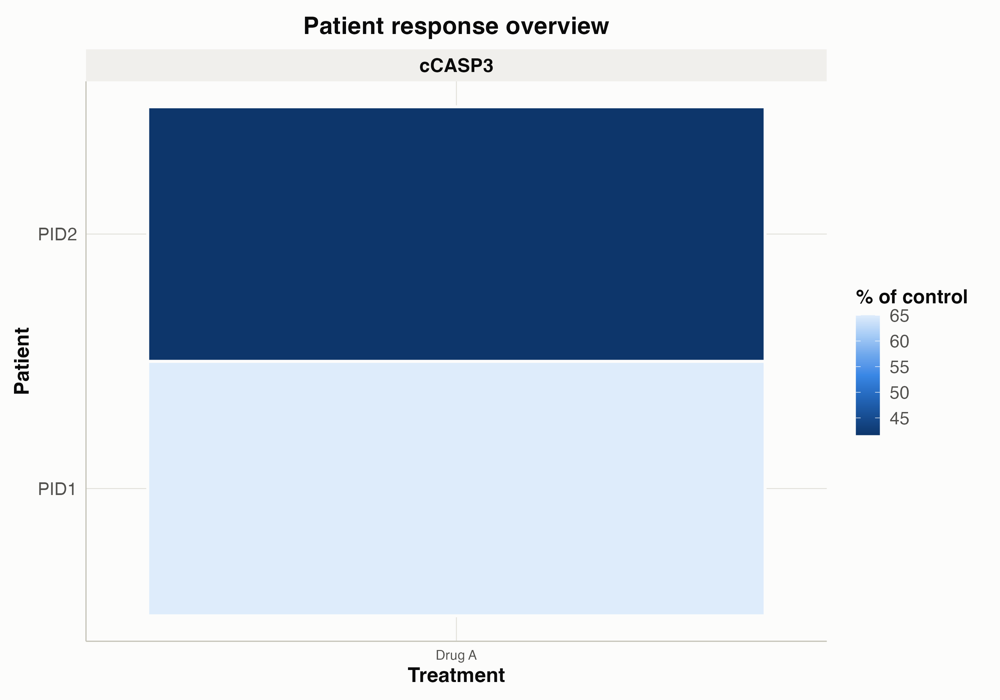

Plot a patient by treatment heatmap of percent-of-control values
Source:R/normalization.R
plot_patient_heatmap.RdSummarizes normalize_to_control() output into a patient x treatment heatmap
of the mean percent-of-control value (averaged across concentrations), a
cohort-level view of how every patient responded to every drug in the panel.
Usage
plot_patient_heatmap(
.data,
patient_column_name = "PID",
treatment_column_name = "Treatment",
control_treatment_name = "Control",
show_values = FALSE,
compare_to_control = FALSE,
stat_method = c("wilcox", "t.test"),
p_adjust_method = "BH",
pvalue_label = c("p.adj.signif", "p.signif", "p.adj.format", "p.format")
)Arguments
- .data
Data frame that has been through
normalize_to_control()on the long format (must contain "pct_of_control", "marker_positivity", a patient column and a treatment column).- patient_column_name
Column holding the patient ID. Defaults to "PID".
- treatment_column_name
Column holding the treatment label. Defaults to "Treatment".
- control_treatment_name
Value identifying control/vehicle wells, excluded from the heatmap. Defaults to "Control".
- show_values
Logical; whether to print the numeric mean
% of controlinside each heatmap tile. Defaults toFALSE.- compare_to_control
Logical; whether to compute and annotate p-values comparing each treatment against
control_treatment_nameper patient and marker facet. Defaults toFALSE.- stat_method
Statistical test used when
compare_to_control = TRUE:"wilcox"(default) or"t.test".- p_adjust_method
Multiple-testing correction method passed to
stats::p.adjust()across treatments within each patient and marker facet. Supports"BH"(default),"bonferroni","holm","fdr","hochberg","hommel","BY", or"none".- pvalue_label
Format for p-value annotations:
"p.adj.signif"(adjusted*,**,***,ns, default),"p.signif"(unadjusted),"p.adj.format", or"p.format".
Details
When multiple drug concentrations or imaged fields of view are present per patient,
compare_to_control = TRUE pools observations across doses and fields of view within
each patient and treatment against control_treatment_name. For dose-specific tests,
filter .data to a single concentration beforehand or use
get_QC_plots(..., x_plot_var = "Treatment_complete", compare_to_control = TRUE).
Examples
df <- data.frame(
PID = rep(c("PID1", "PID2"), each = 4),
Treatment = rep(c("Control", "DrugA"), 4),
marker_positivity = "cCASP3",
marker_positivity_ratio = c(10, 5, 10, 8, 12, 4, 12, 6)
)
normalized <- normalize_to_control(df)
plot_patient_heatmap(normalized)
